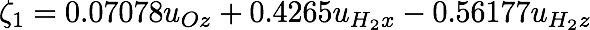
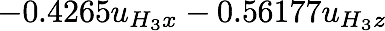

Vibrations of H20: Part 2


Vibrations of H20: Part 2

4. Let us display eigenvectors and eigenvalues corresponding to this irrep by typing Sa, see below:

There are two frequencies, of approximately 1653.6 and 3819.3 sm-1 (as to be expected, as this irrep entered twice). The corresponding eigenvectors are shown as columns underneath the frequencies. The number in columns are coefficients to the atomic displacements, please, refer to the first three columns. For instance, the (1,1) vector is given by:


The actual atomic positions (at equilibrium) are shown in the 4th column for convenience.
5. Free energy contribution due to these two frequencies (i.e., due to irrep A1) can be obtained with Fr, while the corresponding temperature range and the number of points along it are governed by options Tr and Np, respectively. Using default, we get (below):

Basically, these are just zero-point energies, as in this temperature range the other term in the quasi-harmonic free energy is very small.
6. To make a movie, choose the vibration amplitude in Da and then run Vs. A file movie.xyz is created which can be previewed e.g. using xmakemol.